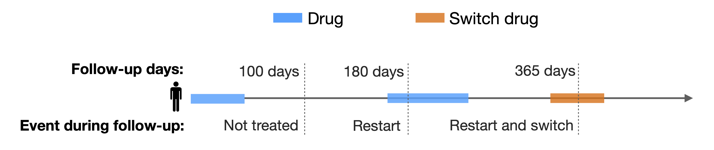
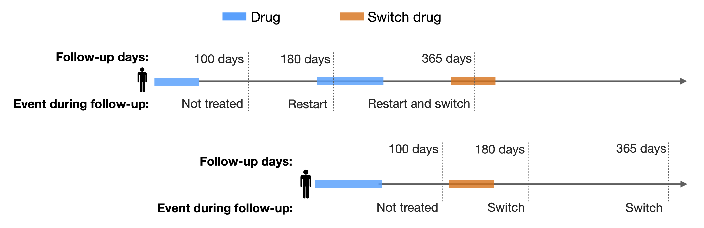
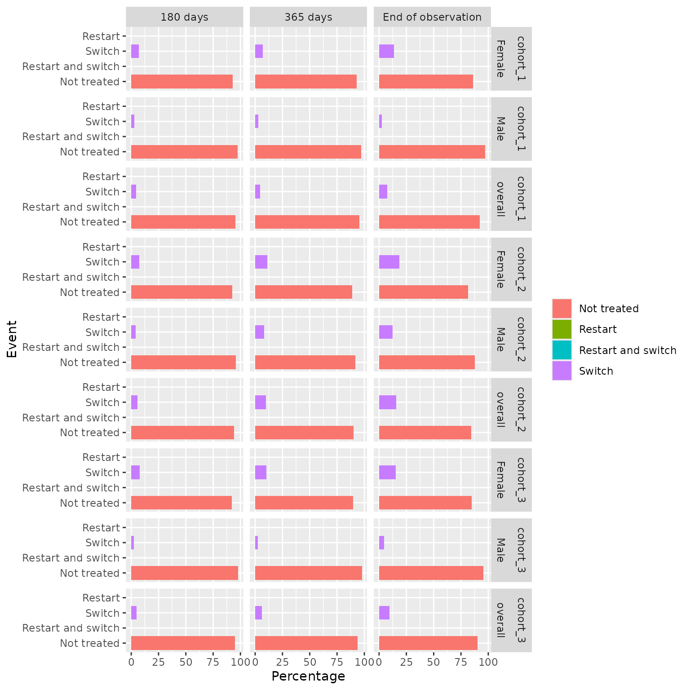

Assessing drug restart and switching after treatment
drug_restart.RmdIntroduction
Obtaining information on drug restart or switching to another drug after discontinuation of the original treatment is often of interest in drug utilization studies. In this vignette, we show how to assess drug switching and restart with this package.
Data
Connect to mock data
For this vignette we will use mock data contained in the DrugUtilisation package.
library(DrugUtilisation)
library(CDMConnector)
library(CodelistGenerator)
library(PatientProfiles)
library(dplyr)
cdm <- mockDrugUtilisation(numberIndividual = 200)Generate study cohorts
We will examine the patterns of drug restart and switching among patients taking metformin as an example. Specifically, we will investigate whether patients restart metformin after discontinuation, switch to insulin, try both medications, or remain untreated.
For this we will need two cohorts: one of patients exposed to metformin and another of patients exposed to insulin.
# codelists
metformin <- getDrugIngredientCodes(cdm = cdm, name = "metformin")
insulin <- getDrugIngredientCodes(cdm = cdm, name = "insulin detemir")
cdm <- generateDrugUtilisationCohortSet(
cdm = cdm, name = "metformin", conceptSet = metformin
)
cdm$metformin |> cohortCount()
#> # A tibble: 1 × 3
#> cohort_definition_id number_records number_subjects
#> <int> <int> <int>
#> 1 1 103 94
cdm <- generateDrugUtilisationCohortSet(
cdm = cdm, name = "insulin", conceptSet = insulin
)
cdm$insulin |> cohortCount()
#> # A tibble: 1 × 3
#> cohort_definition_id number_records number_subjects
#> <int> <int> <int>
#> 1 1 107 92Assess drug restart
The summariseDrugRestart() function analyzes the
outcomes within a treatment cohort following the first exposure to a
specific drug. It categorizes the events into four distinct groups:
Restarting the same treatment.
Switching to a different treatment.
Restarting the same treatment while also switching to another.
Discontinuing treatment altogether (neither the original treatment nor any potential switch).
The figure below illustrates the analysis, focusing on the outcomes after the initial exposure to a particular drug (in blue), with consideration of a specific switch drug (in orange). This study examines what occurs within 100, 180, and 365 days following first treatment discontinuation in the cohort.

Now, let’s use the function to assess metformin restart and switch to insulin after the first metformin treatment.
results <- summariseDrugRestart(
cohort = cdm$metformin,
switchCohortTable = "insulin",
switchCohortId = NULL,
strata = list(),
followUpDays = Inf,
censorDate = NULL,
restrictToFirstDiscontinuation = TRUE
)
#> Warning: Missing values are always removed in SQL aggregation functions.
#> Use `na.rm = TRUE` to silence this warning
#> This warning is displayed once every 8 hours.
results |> glimpse()
#> Rows: 8
#> Columns: 13
#> $ result_id <int> 1, 1, 1, 1, 1, 1, 1, 1
#> $ cdm_name <chr> "unknown", "unknown", "unknown", "unknown", "unknown"…
#> $ group_name <chr> "cohort_name", "cohort_name", "cohort_name", "cohort_…
#> $ group_level <chr> "6809_metformin", "6809_metformin", "6809_metformin",…
#> $ strata_name <chr> "overall", "overall", "overall", "overall", "overall"…
#> $ strata_level <chr> "overall", "overall", "overall", "overall", "overall"…
#> $ variable_name <chr> "End of observation", "End of observation", "End of o…
#> $ variable_level <chr> "restart", "restart", "switch", "switch", "restart an…
#> $ estimate_name <chr> "count", "percentage", "count", "percentage", "count"…
#> $ estimate_type <chr> "integer", "percentage", "integer", "percentage", "in…
#> $ estimate_value <chr> "8", "8.51063829787234", "8", "8.51063829787234", "1"…
#> $ additional_name <chr> "overall", "overall", "overall", "overall", "overall"…
#> $ additional_level <chr> "overall", "overall", "overall", "overall", "overall"…We could be interested in getting these results in different follow-up periods since the first metformin exposure ended. For instance, next we get the results in the first 180 days, the first year, and until the end of observation.
results <- summariseDrugRestart(
cohort = cdm$metformin,
switchCohortTable = "insulin",
switchCohortId = NULL,
strata = list(),
followUpDays = c(180, 365, Inf),
censorDate = NULL,
restrictToFirstDiscontinuation = TRUE
)Other options that this function allows are:
- restrictToFirstDiscontinuation
By default this argument is set to TRUE, which means that we only consider the firsts exposure of the subject. If FALSE, the analysis is conducted on a record level, considering all exposures in the cohort, as the following image illustrates:

- censorEndDate
This argument allows to stop considering restart and switch events after a certain date, which must specified as a column in the cohort.
- strata
This argumnet must be a list pointing to columns or combinations of columns in the cohort to use as strata. It will produce stratified estimates as well as for the overall cohort.
For instance, we reporduce the last calculation but this time straifying by sex. We first use PatientProfiles to add a column indicating the sex, which later we use in strata.
results <- cdm$cohort1 |>
addSex() |>
summariseDrugRestart(
switchCohortTable = "insulin",
switchCohortId = NULL,
strata = list("sex"),
followUpDays = c(180, 365, Inf),
censorDate = NULL,
restrictToFirstDiscontinuation = TRUE
)Visualise drug restart
The package has table and plot functions to help visualizing the
results from summariseDrugRestart().
Table
The function tableDrugRestart() will create a gt,
flextable or tibble table from the summarised_result object created with
summariseDrugRestart(). This function offers multiple
customization options to format the resulting table according to the
user preferences.
tableDrugRestart(
result = results,
header = c("strata"),
splitStrata = TRUE,
cohortName = TRUE,
cdmName = FALSE,
groupColumn = c("cohort_name"),
type = "gt",
formatEstimateName = c(`N (%)` = "<count> (<percentage> %)"),
.options = list()
)
#> ! Results have not been suppressed.| Follow-up | Event | Estimate name | Sex | ||
|---|---|---|---|---|---|
| Overall | Female | Male | |||
| Cohort 1 | |||||
| 180 days | Restart | N (%) | 0 (0.00 %) | 0 (0.00 %) | 0 (0.00 %) |
| Switch | N (%) | 10 (12.99 %) | 4 (9.76 %) | 6 (16.67 %) | |
| Restart and switch | N (%) | 0 (0.00 %) | 0 (0.00 %) | 0 (0.00 %) | |
| Not treated | N (%) | 67 (87.01 %) | 37 (90.24 %) | 30 (83.33 %) | |
| 365 days | Restart | N (%) | 0 (0.00 %) | 0 (0.00 %) | 0 (0.00 %) |
| Switch | N (%) | 10 (12.99 %) | 4 (9.76 %) | 6 (16.67 %) | |
| Restart and switch | N (%) | 0 (0.00 %) | 0 (0.00 %) | 0 (0.00 %) | |
| Not treated | N (%) | 67 (87.01 %) | 37 (90.24 %) | 30 (83.33 %) | |
| End of observation | Restart | N (%) | 0 (0.00 %) | 0 (0.00 %) | 0 (0.00 %) |
| Switch | N (%) | 14 (18.18 %) | 6 (14.63 %) | 8 (22.22 %) | |
| Restart and switch | N (%) | 0 (0.00 %) | 0 (0.00 %) | 0 (0.00 %) | |
| Not treated | N (%) | 63 (81.82 %) | 35 (85.37 %) | 28 (77.78 %) | |
| Cohort 2 | |||||
| 180 days | Restart | N (%) | 0 (0.00 %) | 0 (0.00 %) | 0 (0.00 %) |
| Switch | N (%) | 1 (1.61 %) | 0 (0.00 %) | 1 (2.38 %) | |
| Restart and switch | N (%) | 0 (0.00 %) | 0 (0.00 %) | 0 (0.00 %) | |
| Not treated | N (%) | 61 (98.39 %) | 20 (100.00 %) | 41 (97.62 %) | |
| 365 days | Restart | N (%) | 0 (0.00 %) | 0 (0.00 %) | 0 (0.00 %) |
| Switch | N (%) | 2 (3.23 %) | 0 (0.00 %) | 2 (4.76 %) | |
| Restart and switch | N (%) | 0 (0.00 %) | 0 (0.00 %) | 0 (0.00 %) | |
| Not treated | N (%) | 60 (96.77 %) | 20 (100.00 %) | 40 (95.24 %) | |
| End of observation | Restart | N (%) | 0 (0.00 %) | 0 (0.00 %) | 0 (0.00 %) |
| Switch | N (%) | 5 (8.06 %) | 1 (5.00 %) | 4 (9.52 %) | |
| Restart and switch | N (%) | 0 (0.00 %) | 0 (0.00 %) | 0 (0.00 %) | |
| Not treated | N (%) | 57 (91.94 %) | 19 (95.00 %) | 38 (90.48 %) | |
| Cohort 3 | |||||
| 180 days | Restart | N (%) | 0 (0.00 %) | 0 (0.00 %) | 0 (0.00 %) |
| Switch | N (%) | 7 (11.48 %) | 5 (13.51 %) | 2 (8.33 %) | |
| Restart and switch | N (%) | 0 (0.00 %) | 0 (0.00 %) | 0 (0.00 %) | |
| Not treated | N (%) | 54 (88.52 %) | 32 (86.49 %) | 22 (91.67 %) | |
| 365 days | Restart | N (%) | 0 (0.00 %) | 0 (0.00 %) | 0 (0.00 %) |
| Switch | N (%) | 8 (13.11 %) | 6 (16.22 %) | 2 (8.33 %) | |
| Restart and switch | N (%) | 0 (0.00 %) | 0 (0.00 %) | 0 (0.00 %) | |
| Not treated | N (%) | 53 (86.89 %) | 31 (83.78 %) | 22 (91.67 %) | |
| End of observation | Restart | N (%) | 0 (0.00 %) | 0 (0.00 %) | 0 (0.00 %) |
| Switch | N (%) | 10 (16.39 %) | 7 (18.92 %) | 3 (12.50 %) | |
| Restart and switch | N (%) | 0 (0.00 %) | 0 (0.00 %) | 0 (0.00 %) | |
| Not treated | N (%) | 51 (83.61 %) | 30 (81.08 %) | 21 (87.50 %) | |
Plot
The plotDrugRestart() function creates a bar plot
depicting the percentage of drug restart events for each cohort,
stratum, and follow-up time (specified in the variable_name column of
the summarised result). This function offers customization options for
colours, facetting, and handling of strata.
plotDrugRestart(
result = results,
facetX = "variable_name",
facetY = c("cohort_name", "strata"),
colour = "variable_level",
splitStrata = TRUE
)